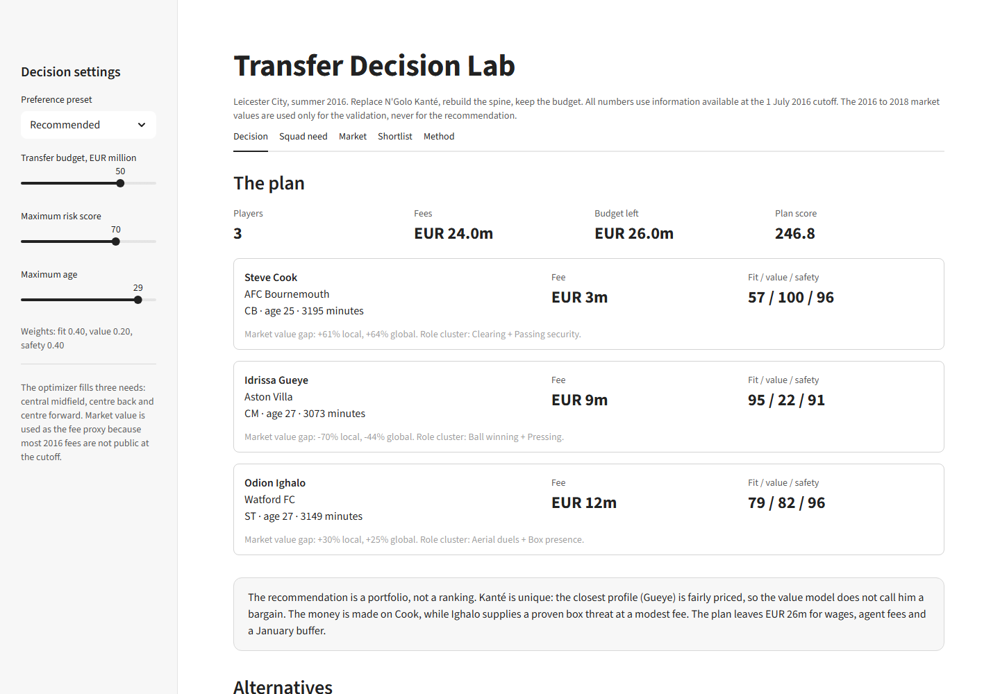
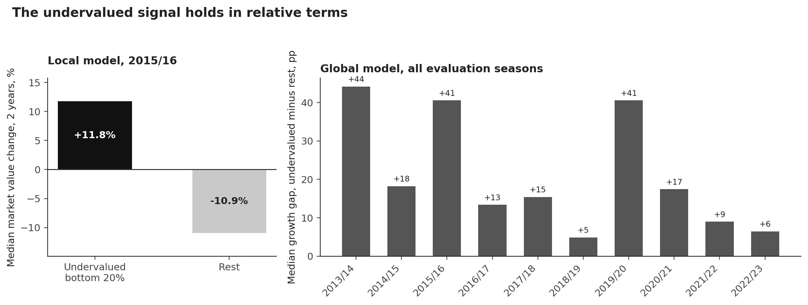

Kanté similarity
Ten actions per 90, compared with the player who left. Formation labels are not roles. The score catches the difference.
Assignment 5 | AI Football Intelligence
Leicester City, summer 2016. A transfer decision system built on 380 real matches, two market models and a EUR 50m budget.
The problem
Leicester won the league with 42.6% possession and the lowest pass completion in the division. N'Golo Kanté played 3,019 minutes, won the ball 17.1 times per 90 and ranked in the 100th percentile for tackles, interceptions and recoveries. He then left for Chelsea.
The club had to replace the work, not the highlight reel. A playmaker would have changed the shape. The team needed a midfielder who could cover ground, win the ball back and carry it forward.

The system
It turns event data into three scores and a budget plan. Every number is traceable to a script in the repository.
Ten actions per 90, compared with the player who left. Formation labels are not roles. The score catches the difference.
A player is priced against peers in the same league and season. The global model learns from 30,939 player seasons.
A binary optimiser fills central midfield, centre back and centre forward under a fee budget, a risk limit and an age policy.
380 Premier League games. Every pass, carry, shot, pressure and defensive action, with coordinates and pressure flags.
Global LightGBM and local Ridge models. The global model is tested on future seasons. The local model uses five fold out of fold predictions.
Fit, value and safety. One player per need. The exact optimum is checked against a brute force search.
Every transfer trades fit against value and risk.
The decision
The recommended plan is a portfolio, not a ranking. It fills all three needs and leaves EUR 26m for wages, agent fees and a January buffer.
| Need | Player | Fee | Fit | Value | Safety |
|---|---|---|---|---|---|
| Central midfieldReplace Kanté | Idrissa GueyeAston Villa | EUR 9m | 95 | 22 | 91 |
| Centre backSuccession for Huth and Morgan | Steve CookAFC Bournemouth | EUR 3m | 57 | 100 | 96 |
| Centre forwardCompetition for Vardy | Odion IghaloWatford | EUR 12m | 79 | 82 | 96 |

Proof, not a promise
The value signal is modest. The report shows the backtest, the baseline and the cases where the method misses.

Questions
The season has full event data and two more years of market values. A current shortlist would have no observable outcome. The retrospective design makes the method testable.
Price is not fit. The model separates what the market pays from what the team needs. A player can be expensive and wrong, or cheap and right for the role.
The market underprices defensive actions. Gueye is the closest real match replacement and the plan can afford him. Cook carries the value case. The report states the difference between market value and club utility.
A temporal holdout for the global model, five fold out of fold predictions for the local model, a two year market value backtest and a brute force check of the optimiser. Nine tests pass.
One league of event data, market value as a fee proxy, a retrospective case and noisy residuals. Ighalo is the clearest individual risk. The plan keeps a EUR 26m buffer for that reason.
Yes. The README has the three commands. The app reads the processed tables and runs offline. The report and the slides are separate PDFs in the repository.
StatsBomb open data for the 2015/16 Premier League and a Transfermarkt datalake for profiles, market values, performances, transfers and injuries. The report cites both sources.
The full argument
23 pages. Eight figures. Every table and figure comes from the code in the repository.
Read the transfer reportOr run the app from the project folder:python -m streamlit run app.py